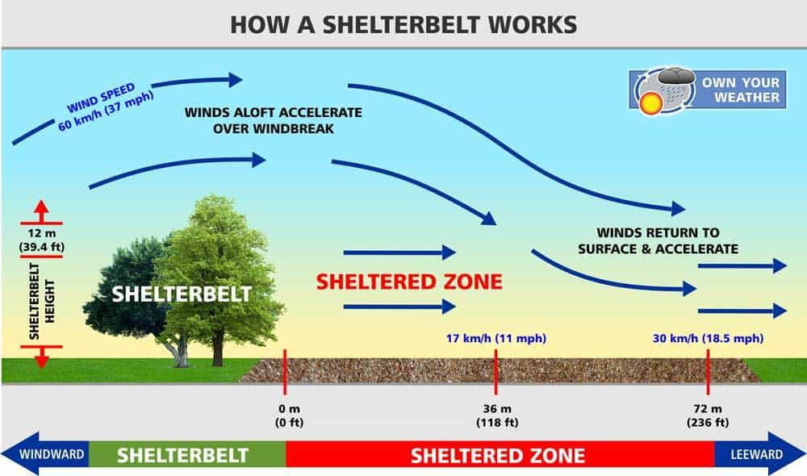
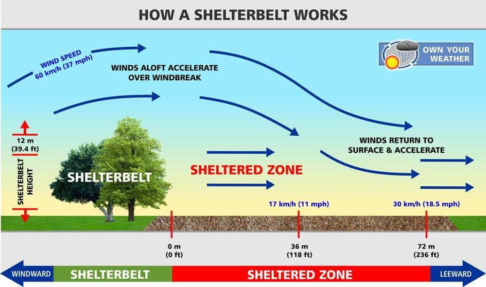

Methods of Prevention of Soil Erosion:
Soil erosion is a major environmental concern that can have devastating consequences, including reduced agricultural productivity, sedimentation of waterways, and loss of biodiversity. Fortunately, there are a number of methods we can employ to prevent soil erosion and protect this valuable resource. Here's a breakdown of some key techniques:
Utilizing Vegetation:


- Planting Trees and Plants: This is a fundamental strategy in soil erosion control. Trees and other plants intercept rainfall, reducing the impact of raindrops on the soil surface. A study published in the Journal of Soil and Water Conservation found that tree canopy cover can reduce soil erosion by up to 80%. Their extensive root networks hold soil particles together, increasing soil cohesion and stability. Planting a diverse variety of native trees, shrubs, and grasses creates a more robust and resilient cover than monocultures (planting a single species). A diverse plant community provides habitat for a variety of organisms that contribute to healthy soil, and the root systems of different plant species occupy various niches within the soil profile, promoting better overall soil structure.
- Cover Crops: During fallow periods (when fields are not being used for main crops), planting cover crops like clover, rye, or oats provides year-round ground cover. These crops protect the soil from the damaging effects of raindrops and wind. Cover crops also add organic matter to the soil as they decompose, improving soil fertility and water retention. A study by the American Society of Agronomy found that cover crops can reduce soil erosion by 20-30% compared to bare fallow fields. Additionally, cover crops can help suppress weeds, reducing competition with main crops for water and nutrients.
- Crop Rotation: Planting different crops in sequence is a well-established agricultural practice that offers numerous benefits, including soil erosion control. Different crops have varying rooting systems. Deep-rooted crops like alfalfa can help break up compacted soil layers and improve drainage. Following a deep-rooted crop with a shallow-rooted crop like lettuce can utilize the loosened soil profile for better root growth. Crop rotation also disrupts pest and disease cycles that target specific crops. Studies have shown that crop rotation can be just as effective as conservation tillage in reducing soil erosion.
- Strip Cropping: It involves planting alternating strips of close-growing crops (like hay) and row crops (like corn) across a field. The close-growing crops act as barriers, slowing runoff and anchoring soil with their roots. This reduces erosion and traps any sediment from the row crops. Studies show it can decrease soil erosion by 20-50%. Beyond erosion control, strip cropping improves soil health, reduces weeds, and creates habitat for beneficial creatures.
Mulching and Matting:


- Mulching: Applying a layer of organic material (like straw, wood chips, or bark) on the soil surface reduces the impact of raindrops by up to 80%. This cushioning effect prevents soil particles from being dislodged and washed away by runoff. Mulch also helps retain moisture in the soil, reducing runoff and soil erosion. A study published by the Soil Science Society of America found that mulching reduced runoff by 50-90% compared to unmulched plots. The effectiveness of mulch in preventing soil erosion depends on several factors, including the type of mulch material, the thickness of the mulch layer, and the slope of the land. Generally, coarser mulch materials like wood chips are more effective for erosion control on slopes, while finer materials like straw may be better suited for flat areas. A 2-3 inch layer of mulch is typically recommended for erosion control.
- Matting: Jute or coir mats are biodegradable fabrics made from natural fibers that can be used on exposed slopes to temporarily stabilize the soil, especially during the establishment of vegetation. These mats help to hold soil particles in place and reduce the velocity of runoff water. Jute and coir mats are typically used for short-term erosion control applications, as they will decompose over time. When selecting a matting material, it's important to consider the slope grade, soil type, and expected rainfall intensity.
Structural Techniques:
- Terrace Farming:
- Impact: Studies have shown that terrace farming can dramatically reduce soil erosion on slopes by up to 80%.
- Mechanism: Terraces create level fields on hillsides, effectively converting steep slopes into a series of manageable steps. This disrupts the flow of water down the slope, allowing it to infiltrate the soil instead of causing erosion. Additionally, the walls or bunds between terraces can further act as barriers, trapping sediment and preventing it from washing away.
- Implementation: Terraces can be constructed by hand or with machinery, depending on the scale of the project and the terrain. They come in various shapes and sizes, with the most common being level benches, contour terraces, and channel terraces. The type of terrace chosen depends on factors like slope steepness, soil type, and crop type.
- Example: The Banaue Rice Terraces in the Philippines are a UNESCO World Heritage Site and a testament to the effectiveness and ingenuity of terrace farming. These terraces have been cultivated for over 2,000 years and are a marvel of agricultural engineering.
- Shelterbelts or Windbreaks:
- Impact: Research by the American Wind Erosion Association indicates that shelterbelts can reduce wind erosion by up to 80%. They can also increase crop yields by improving moisture retention and reducing wind damage to crops.
- Mechanism: Strategic rows of trees act as wind barriers, disrupting wind patterns and reducing wind speed at ground level. This significantly reduces the wind's ability to pick up and transport soil particles, thereby minimizing wind erosion. Shelterbelts also create microclimates that can be more favorable for crop growth by reducing wind chill and increasing humidity.
- Implementation: Shelterbelts are typically planted in one or more rows along the edges of fields, perpendicular to the prevailing wind direction. The choice of tree species for shelterbelts is crucial. Species should be fast-growing, have deep root systems to resist windthrow, and be adapted to the local climate and soil conditions.
- Example: The Great Plains Shelterbelt Project in the United States, initiated in the 1930s, is a large-scale shelterbelt planting program that aimed to reduce wind erosion during the Dust Bowl era. The project planted millions of trees across the Great Plains, significantly reducing wind erosion and improving agricultural productivity in the region.
- Embankments:
- Impact: Embankments can be highly effective in controlling flooding and riverbank erosion. Studies have shown that well-designed and maintained embankments can reduce riverbank erosion by up to 50%.
- Mechanism: Embankments act as physical barriers, confining the flow of water within the river channel and preventing it from overflowing onto the surrounding land. They also absorb the force of the water, reducing its erosive power on the riverbank.
- Implementation: Embankments are typically constructed from earth or stone. Their design and construction require careful engineering considerations to ensure stability and prevent breaches during high water events. Vegetation like trees and shrubs can be planted on the embankments to further enhance their effectiveness and provide additional environmental benefits like habitat creation.
- Example: The Netherlands has a long history of using embankments, or dikes, to protect its low-lying lands from flooding. The country has an extensive network of dikes that have been instrumental in protecting its population and infrastructure from the sea for centuries.
 


- Terrace Farming:
Additional Methods:


- Contour Farming: Plowing, planting, and cultivating crops along the contours of a slope rather than up and down disrupts the flow of rainwater, allowing it to infiltrate the soil instead of running off rapidly. This can significantly reduce soil erosion. A study by the Soil and Water Conservation Society found that contour farming can reduce soil erosion by up to 50% compared to farming up and down slopes.
- Minimizing Tillage: Excessive tillage breaks down soil structure, creating loose and easily erodible soil particles. Conservation tillage techniques such as no-till or reduced tillage minimize soil disturbance. These methods leave crop residues on the soil surface, which helps to protect the soil from erosion by raindrops and wind. A long-term study by the American Society of Agronomy found that no-till practices can reduce soil erosion by up to 90% compared to conventional tillage practices.